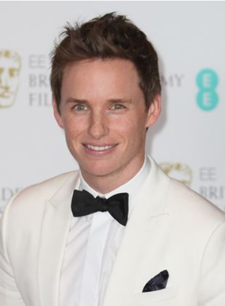
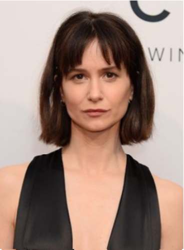
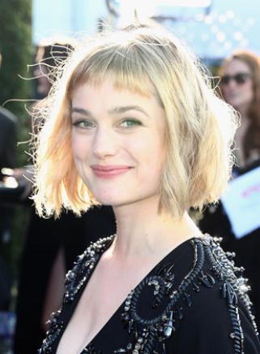
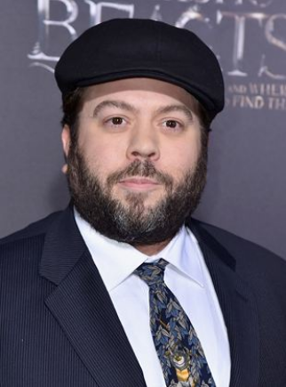
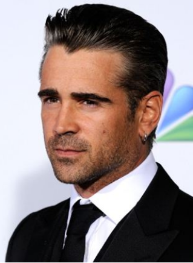
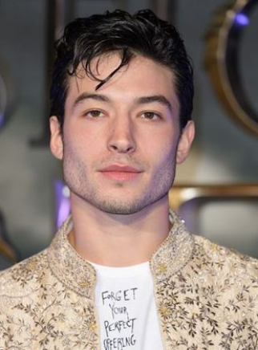

Nome: Edward John David Redmayne
Nacionalidade: Britânico
Nascimento: 6 de janeiro de 1982 (Westminster, Inglaterra)
Idade: 40 anos
Edward John David Redmayne é um londrino que, além de ator, trabalha como modelo. Ele se graduou em história da arte pela Trinity College, em Cambridge, no ano de 2003.

Nome: Katherine Boyer Waterston
Nacionalidade: Britânica
Nascimento: 3 de março de 1980 (Westminster, Londres, Inglaterra)
Idade: 42 anos
Katherine é filha da ex-modelo Lynn Louisa (nascida Woodruff) e do ator Sam Waterston. Ela ganhou seu B.F.A. em Atuação na Tisch School of the Arts na NYU.

Nome: Alison Loren Sudol
Nacionalidade: Americana
Nascimento: 23 de dezembro de 1984 (Seattle, Washington)
Idade: 37 anos
Alison Sudol é uma atriz, cantora, compositora e diretora de videoclipes, também conhecida no mundo da música como A Fine Frenzy.

Nome: Daniel Kevin Fogler
Nacionalidade: Americano
Nascimento: 20 de outubro de 1976 (Brooklyn, Nova York, Nova York)
Idade: 45 anos
Antes de frequentar a Escola de Teatro da Universidade de Boston, ele frequentou a Poly Prep Country Day School e graduou-se em 1994.

Nome: Colin James Farrell
Nacionalidade: Irlandês
Nascimento: 31 de maio de 1976 (Dublin, Irlanda)
Idade: 46 anos
Farrell foi educado na St. Brigid's National School, seguido pela escola secundária no Castleknock College, uma escola particular exclusiva para meninos.O ator tirou sua inspiração para começar a atuar quando a atuação de Henry Thomas em E.T. - O Extraterrestre o levou às lágrimas.

Nome: Ezra Matthew Miller
Nacionalidade: Americano
Nascimento: 30 de setembro de 1992 (Wyckoff, Nova Jersey, EUA)
Idade: 29 anos
Quando tinha seis anos, Miller começou a treinar como cantor de ópera para superar um problema de fala. Miller frequentou a Rockland Country Day School e a Hudson School, abandonando os estudos aos 16 anos após o lançamento do filme Afterschool.